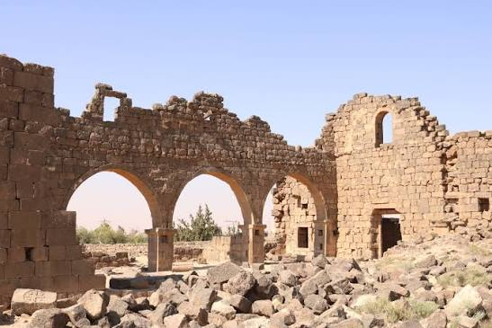
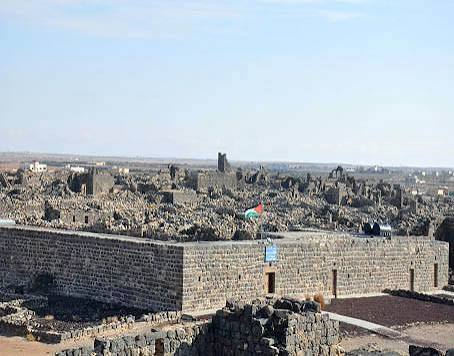
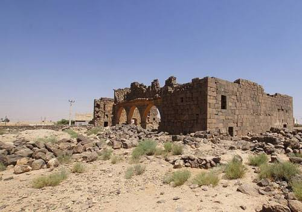
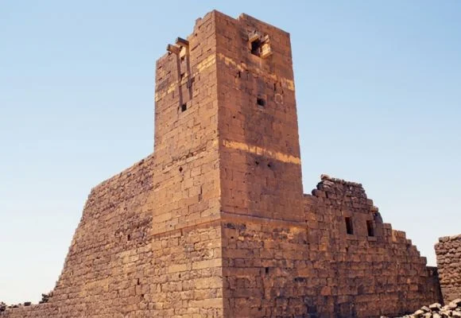
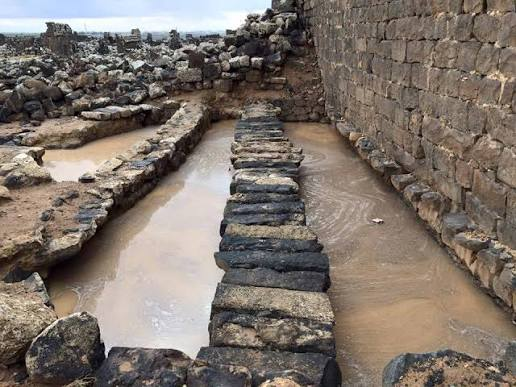
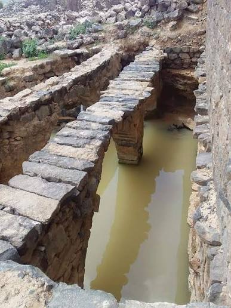
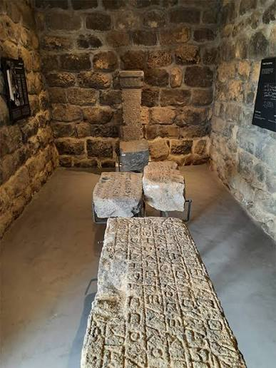
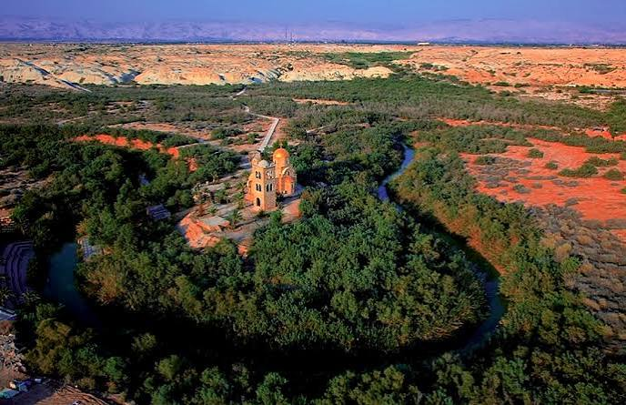

رحلة إلى مدينة البازلت السوداء واكتشاف تاريخ الحضارات القديمة في شمال الأردن.
اكتشف أم الجمال
تُعد أم الجمال من أهم المواقع الأثرية في شمال الأردن، وتقع في محافظة المفرق. تشتهر المدينة بمبانيها القديمة التي شُيدت باستخدام الحجر البازلتي الأسود، ولذلك تُعرف باسم المدينة السوداء.
تعاقبت على أم الجمال حضارات وفترات تاريخية متعددة، وشهدت ازدهارًا في العصور الرومانية والبيزنطية والإسلامية المبكرة.
تتميز المدينة بآثارها المعمارية التي تشمل البيوت والأبراج والكنائس والساحات، مما يجعلها وجهة مهمة لمحبي التاريخ والآثار.
تقع أم الجمال في محافظة المفرق شمال شرق الأردن، وتتميز بموقعها ضمن منطقة ذات طبيعة بركانية، حيث تنتشر الصخور البازلتية السوداء.
يمكن الوصول إليها بالسيارة من مدينة المفرق، وتُعد زيارتها فرصة للتعرف على التراث الأثري والمعماري في شمال الأردن.
يعود تاريخ الاستيطان في أم الجمال إلى فترات قديمة، وقد ازدهرت المدينة خلال العهدين الروماني والبيزنطي واستمرت أهميتها خلال الفترات الإسلامية المبكرة.
ساعد موقعها الجغرافي على ارتباطها بالطرق التجارية والزراعية في المنطقة، كما تعكس مبانيها تطور أساليب البناء واستخدام الحجر البازلتي.
وتُظهر النقوش والمباني التاريخية جوانب من حياة السكان وأنشطتهم الدينية والاجتماعية والاقتصادية في العصور الماضية.


مبانٍ سكنية قديمة شُيدت من الحجر الأسود، وتعكس أسلوب الحياة والمعمار في المدينة.

تضم المدينة بقايا كنائس تاريخية تعكس أهمية الحياة الدينية في الفترات القديمة.

مبانٍ مرتفعة كانت جزءًا من النسيج المعماري والدفاعي للمدينة.

مداخل وممرات حجرية توضح تنظيم المباني والشوارع داخل المدينة القديمة.

بقايا خزانات ومنشآت استُخدمت لتجميع المياه والاستفادة منها.

نقوش تاريخية تساعد على فهم جوانب من تاريخ المدينة وسكانها.
التجول بين المباني الأثرية والتعرف على تاريخ المدينة وحضاراتها.
تصوير المباني البازلتية والمناظر التاريخية المميزة.
اكتشاف طرق البناء القديمة واستخدام الحجر البازلتي في تشييد المباني.
التعرف على الحضارات التي مرت بالمنطقة وأثرها في تاريخ الأردن.
تمثل أم الجمال جزءًا مهمًا من التراث الحضاري والأثري الأردني، وتساعد في التعريف بتاريخ شمال الأردن وتنوع حضاراته.

تمنح زيارة أم الجمال فرصة للتعرف على تاريخ الأردن وحضاراته القديمة، ومشاهدة نماذج معمارية مميزة شُيدت من الحجر البازلتي.
كما تساعد الزائر على فهم أساليب الحياة القديمة، وتقدير أهمية المحافظة على المواقع الأثرية والتراث الثقافي.